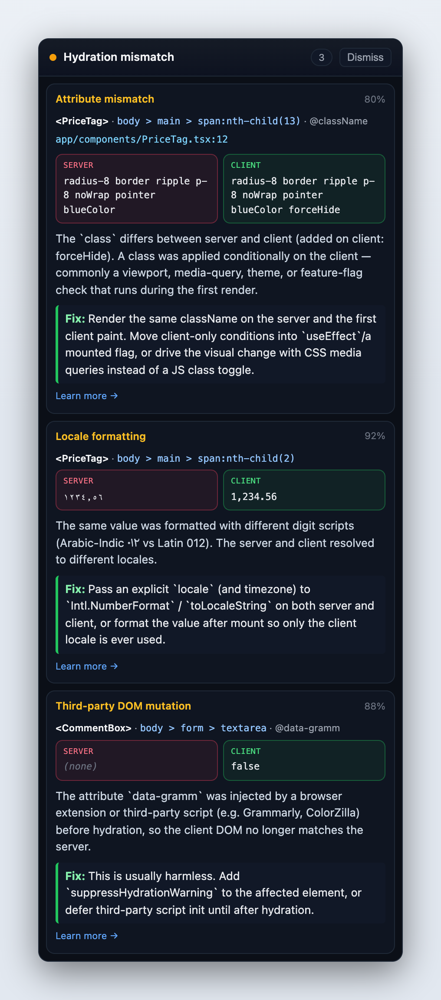

why-hydration — find which React component broke hydration
A development-only debugger for React hydration mismatches in Next.js, Remix, Vite and any app that hydrates server-rendered HTML. It names the component, shows the server and client values side by side, and tells you the likely cause and the fix — with zero production cost.
npm install --save-dev why-hydration
What it tells you
- Where — the component name and, when your build includes it, the source file and line, plus the DOM path.
- What — the server-rendered value and the client-rendered value, side by side.
- Why — the likely cause: non-deterministic values, dates and time zones, locale formatting, browser-only APIs, viewport branching, invalid HTML nesting, whitespace, third-party DOM changes, or attribute mismatches.
- The fix — a specific suggestion, with a link to a fuller explanation.
- All of them, once — every mismatch on the page, deduplicated, with third-party noise (ads, consent banners, extensions) filtered out.
Searching for this error?
If you landed here from one of these messages, this is the tool for it. Each is quoted exactly as React prints it, and why-hydration recognizes every one.
React 19 (and Next.js 15+)
Hydration failed because the server rendered text didn't match the client. As a result this tree will be regenerated on the client. Hydration failed because the server rendered HTML didn't match the client. As a result this tree will be regenerated on the client. A tree hydrated but some attributes of the server rendered HTML didn't match the client properties. This won't be patched up. In HTML, <div> cannot be a descendant of <p>. This will cause a hydration error.
React 18 (and Next.js 13–14)
Hydration failed because the initial UI does not match what was rendered on the server. There was an error while hydrating. Because the error happened outside of a Suspense boundary, the entire root will switch to client rendering. There was an error while hydrating this Suspense boundary. Switched to client rendering. Text content does not match server-rendered HTML. Warning: Text content did not match. Server: "…" Client: "…" Warning: Prop `className` did not match. Server: "…" Client: "…" Warning: Expected server HTML to contain a matching <div> in <div>. Warning: Did not expect server HTML to contain a <div> in <div>. Warning: validateDOMNesting(...): <div> cannot appear as a descendant of <p>.
Set it up in Next.js
// app/layout.tsx
import { HydrationSnapshotScript } from 'why-hydration/next/script';
import { HydrationInspector } from 'why-hydration/next';
export default function RootLayout({ children }: { children: React.ReactNode }) {
return (
<html>
<head>
{process.env.NODE_ENV !== 'production' && <HydrationSnapshotScript />}
</head>
<body>
<HydrationInspector>{children}</HydrationInspector>
</body>
</html>
);
}Vite, CRA, Remix and custom hydrateRoot setups use createHydrationInspector() — see the full setup guide.
Arabic, Hebrew and Persian, right-to-left
On a page whose <html lang> is Arabic, Hebrew or Persian, the overlay speaks that language and is laid out right-to-left. Every other page gets English. Page data always renders in its own direction, so an Arabic price keeps its punctuation at the end even in the English panel, and invisible bidi marks — a common cause of mismatches in RTL apps — are shown instead of hidden.
Zero production cost
Every code path is gated behind process.env.NODE_ENV, so production builds tree-shake it to a pass-through component: about 99 bytes, enforced by a size budget in CI.